In this section, we show that the two learning methods Naive Bayes and Rocchio are instances of linear classifiers, the perhaps most important group of text classifiers, and contrast them with nonlinear classifiers. To simplify the discussion, we will only consider two-class classifiers in this section and define a linear classifier as a two-class classifier that decides class membership by comparing a linear combination of the features to a threshold.
| 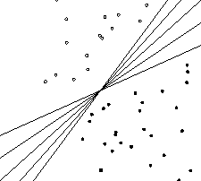 |
In two dimensions, a linear classifier is a line. Five examples are shown in Figure 14.8 . These lines have the functional form
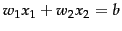. The classification rule of a linear classifier is to assign a document to  if
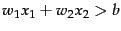 and to
if
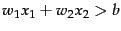 and to  if
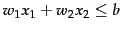. Here,
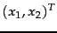 is the two-dimensional vector representation of the document and
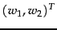 is the parameter vector that defines (together with
if
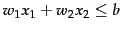. Here,
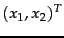 is the two-dimensional vector representation of the document and
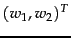 is the parameter vector that defines (together with  ) the decision boundary. An alternative geometric interpretation of a linear classifier is provided in Figure 15.7 (page
) the decision boundary. An alternative geometric interpretation of a linear classifier is provided in Figure 15.7 (page  ).
).
We can generalize this 2D linear classifier to higher dimensions by defining a hyperplane as we did in Equation 140, repeated here as Equation 144:
The corresponding algorithm for linear classification in  dimensions is shown in Figure 14.9 . Linear classification at first seems trivial given the simplicity of this algorithm. However, the difficulty is in training the linear classifier, that is, in determining the parameters 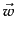 and
dimensions is shown in Figure 14.9 . Linear classification at first seems trivial given the simplicity of this algorithm. However, the difficulty is in training the linear classifier, that is, in determining the parameters 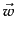 and  based on the training set. In general, some learning methods compute much better parameters than others where our criterion for evaluating the quality of a learning method is the effectiveness of the learned linear classifier on new data.
based on the training set. In general, some learning methods compute much better parameters than others where our criterion for evaluating the quality of a learning method is the effectiveness of the learned linear classifier on new data.
We now show that Rocchio and Naive Bayes are linear classifiers. To see this for Rocchio, observe that a vector is on the decision boundary if it has equal distance to the two class centroids:
We can derive the linearity of Naive Bayes from its decision rule, which chooses the category  with the largest
with the largest
 (Figure 13.2 , page 13.2 ) where:
(Figure 13.2 , page 13.2 ) where:
| (146) |
We choose class  if the odds are greater than 1 or, equivalently, if the log odds are greater than 0. It is easy to see that Equation 147 is an instance of Equation 144 for
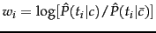,
if the odds are greater than 1 or, equivalently, if the log odds are greater than 0. It is easy to see that Equation 147 is an instance of Equation 144 for
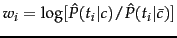,  number of occurrences of
number of occurrences of  in
in  , and
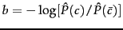. Here, the index
, and
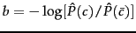. Here, the index  ,
,
 , refers to terms of the vocabulary (not to positions in
, refers to terms of the vocabulary (not to positions in  as
as  does; cf. variantmultinomial) and and are
does; cf. variantmultinomial) and and are  -dimensional vectors. So in log space, Naive Bayes is a linear classifier.
-dimensional vectors. So in log space, Naive Bayes is a linear classifier.
| 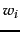 | 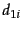 | 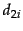 | |||||
| prime | 0.70 | 0 | 1 | dlrs | -0.71 | 1 | 1 |
| rate | 0.67 | 1 | 0 | world | -0.35 | 1 | 0 |
| interest | 0.63 | 0 | 0 | sees | -0.33 | 0 | 0 |
| rates | 0.60 | 0 | 0 | year | -0.25 | 0 | 0 |
| discount | 0.46 | 1 | 0 | group | -0.24 | 0 | 0 |
| bundesbank | 0.43 | 0 | 0 | dlr | -0.24 | 0 | 0 |
Worked example. Table 14.4 defines a linear classifier for the category interest in Reuters-21578 (see Section 13.6 , page 13.6 ). We assign document 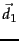 ``rate discount dlrs world'' to interest since
 . We assign
. We assign  ``prime dlrs'' to the complement class (not in interest) since
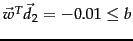. For simplicity, we assume a simple binary vector representation in this example: 1 for occurring terms, 0 for non-occurring terms. End worked example.
``prime dlrs'' to the complement class (not in interest) since
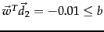. For simplicity, we assume a simple binary vector representation in this example: 1 for occurring terms, 0 for non-occurring terms. End worked example.
![\includegraphics[width=9cm]{newbiasvar.eps}](img1186.png) A linear problem with noise. In this hypothetical web page classification scenario, Chinese-only web pages are solid circles and mixed Chinese-English web pages are squares. The two classes are separated by a linear class boundary (dashed line, short dashes), except for three noise documents (marked with arrows).
A linear problem with noise. In this hypothetical web page classification scenario, Chinese-only web pages are solid circles and mixed Chinese-English web pages are squares. The two classes are separated by a linear class boundary (dashed line, short dashes), except for three noise documents (marked with arrows).
Figure 14.10 is a graphical example of a linear problem, which we define to mean that the underlying distributions 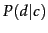 and 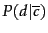 of the two classes are separated by a line. We call this separating line the class boundary . It is the ``true'' boundary of the two classes and we distinguish it from the decision boundary that the learning method computes to approximate the class boundary.
As is typical in text classification, there are some noise documents in Figure 14.10 (marked with arrows) that do not fit well into the overall distribution of the classes. In Section 13.5 (page 13.5 ), we defined a noise feature as a misleading feature that, when included in the document representation, on average increases the classification error. Analogously, a noise document is a document that, when included in the training set, misleads the learning method and increases classification error. Intuitively, the underlying distribution partitions the representation space into areas with mostly homogeneous class assignments. A document that does not conform with the dominant class in its area is a noise document.
Noise documents are one reason why training a linear classifier is hard. If we pay too much attention to noise documents when choosing the decision hyperplane of the classifier, then it will be inaccurate on new data. More fundamentally, it is usually difficult to determine which documents are noise documents and therefore potentially misleading.
If there exists a hyperplane that perfectly separates the two classes, then we call the two classes linearly separable . In fact, if linear separability holds, then there is an infinite number of linear separators (Exercise 14.4 ) as illustrated by Figure 14.8 , where the number of possible separating hyperplanes is infinite.
Figure 14.8 illustrates another challenge in training a linear classifier. If we are dealing with a linearly separable problem, then we need a criterion for selecting among all decision hyperplanes that perfectly separate the training data. In general, some of these hyperplanes will do well on new data, some will not.
An example of a nonlinear classifier is kNN. The nonlinearity of kNN is intuitively clear when looking at examples like Figure 14.6 . The decision boundaries of kNN (the double lines in Figure 14.6 ) are locally linear segments, but in general have a complex shape that is not equivalent to a line in 2D or a hyperplane in higher dimensions.
Figure 14.11 is another example of a nonlinear problem: there is no good linear separator between the distributions and because of the circular ``enclave'' in the upper left part of the graph. Linear classifiers misclassify the enclave, whereas a nonlinear classifier like kNN will be highly accurate for this type of problem if the training set is large enough.
If a problem is nonlinear and its class boundaries cannot be approximated well with linear hyperplanes, then nonlinear classifiers are often more accurate than linear classifiers. If a problem is linear, it is best to use a simpler linear classifier.
Exercises.